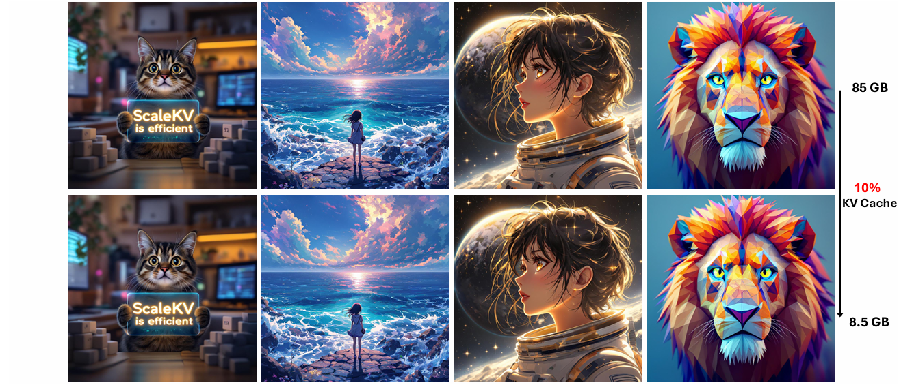

Memory-Efficient Visual Autoregressive Modeling with Scale-Aware KV Cache
NeurIPS 2025
Scale-aware cache management reduces KV memory by 90% without quality loss, making visual autoregressive generation faster and practical at resolutions up to 4K.
Paper
Code
Abstract
Visual Autoregressive modeling offers efficient, scalable next-scale prediction, but its coarse-to-fine process produces a rapidly growing KV cache. ScaleKV identifies scale-specific drafters and refiners from their distinct attention patterns, then gives each group differentiated cache capacity. On the Infinity model family, it preserves pixel-level fidelity while reducing KV-cache memory to 10% of the original.